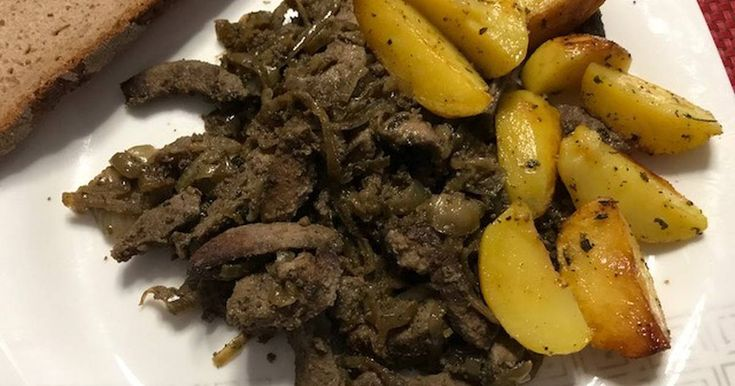
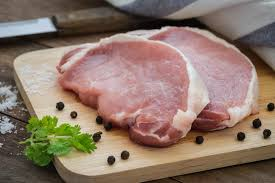
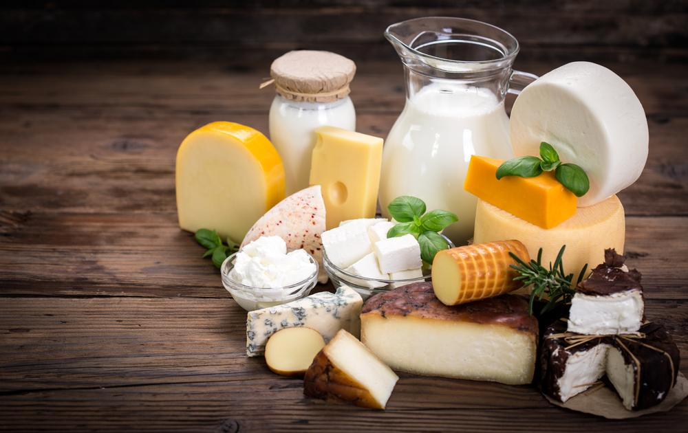

Vitaminok
|
A vitamin olyan szerves vegyület, amely kis mennyiségben ugyan, de nélkülözhetetlen az emberi szervezet számára, viszont kellő mennyiségben az előállítására nem mindig képes, ezért tápanyag formájában kénytelen hozzájutni. A vitaminokat nem kémiai szerkezetük, hanem biokémiai aktivitásuk alapján osztályozzák, ezért egy bizonyos vitaminnak akár több, azonos hatású vegyületet is tekinthetünk. A vegyes táplálkozás általában fedezi a vitaminszükségletet, de az étrend összeállításánál nemcsak arra kell törekedni, hogy a táplálék nyersanyaga vitaminban gazdag legyen, hanem figyelemmel kell lenni arra is, hogy az ételek elkészítése során főleg a hevítés hatására a vízben oldódó vitaminok 10-50%-a is elbomolhat, elveszhet. A vitaminokat tartalmazó kiegészítők, ásványi anyagok szedésének kedvező hatása legalább több hét, vagy több hónap múlva válik érezhetővé: javul az általános közérzet, a viselkedés energikusabb, a hangulat optimistább lesz, könnyebb elkerülni vagy leküzdeni a kisebb betegségeket. Fontos szem előtt tartani, hogy miket lehet távlatilag elkerülni az ilyen kiegészítők szedésével (példaként): csontritkulás, rák, szívbetegségek, stroke, szenilitás.Ennek oka az, hogy a modern átlagember általában vitaminhiányosan étkezik, nem visz be szervezetébe elegendő mennyiségű vitamint. Orvosi vér- és vizeletvizsgálat alapján kiderülnek bizonyos hiányzó, vagy kevéssé felszívódó anyagok, amiket pótolni kell. |

|
A-vitaminHatása:A-vitaminnak, illetve a retinoidoknak számos folyamatban, így a retina fényérzékenységét biztosító rodopszin felépítésében, a csontnövekedésben, a reprodukcióban, az embrionális fejlődésben, a hámszövet és az epithelialis szövetek épségének a fenntartásában, az ektoderma normális fejlődéséhez és működéséhez, és számos más sejt differenciálódásának irányításában van lényeges szerepük. Forrása:
|
 |
B-vitaminokB1-vitaminA tiamin vagy B1-vitamin vagy aneurin a szénhidrátok, zsírok és alkoholok lebontásához és átalakításához, valamint a szívizom és idegsejtek megfelelő működéséhez szükséges anti-polineuritiszes vitamin. Forrása:
B2-vitaminA B2-vitamin, más néven riboflavin, szervezetben betöltött szerepe sokrétű, főleg az aminosavak és a zsírsavak lebontásában, ezen kívül a szöveti légzésben, az oxidatív funkciókban és a méregtelenítésben töltenek be fontos szerepet. Forrása:
B12-vitaminA B12-vitamin kulcsfontosságú szerepet játszik az agy és a központi idegrendszer működésében, valamint a vérképzés folyamatában. Forrása:
|
  |